MyBatisPlus概述
MyBatisPlus可以节省大量时间，所有的CRUD代码都可以自动化完成！
JPA、tk-mapper、MyBatisPlus
简介
MyBatis是简化JDBC操作的！
官网：https://mp.baomidou.com/ MyBatisPlus，简化MyBatis！
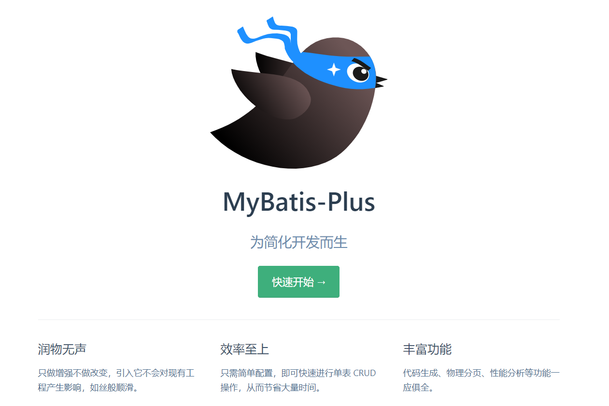
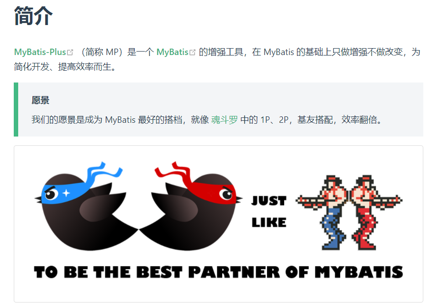
特性
- 无侵入：只做增强不做改变，引入它不会对现有工程产生影响，如丝般顺滑
- 损耗小：启动即会自动注入基本 CURD，性能基本无损耗，直接面向对象操作
- 强大的 CRUD 操作：内置通用 Mapper、通用 Service，仅仅通过少量配置即可实现单表大部分 CRUD 操作，更有强大的条件构造器，满足各类使用需求
- 支持 Lambda 形式调用：通过 Lambda 表达式，方便的编写各类查询条件，无需再担心字段写错
- 支持主键自动生成：支持多达 4 种主键策略（内含分布式唯一 ID 生成器 - Sequence），可自由配置，完美解决主键问题
- 支持 ActiveRecord 模式：支持 ActiveRecord 形式调用，实体类只需继承 Model 类即可进行强大的 CRUD 操作
- 支持自定义全局通用操作：支持全局通用方法注入（ Write once, use anywhere ）
- 内置代码生成器：采用代码或者 Maven 插件可快速生成 Mapper 、 Model 、 Service 、 Controller 层代码，支持模板引擎，更有超多自定义配置等您来使用
- 内置分页插件：基于 MyBatis 物理分页，开发者无需关心具体操作，配置好插件之后，写分页等同于普通 List 查询
- 分页插件支持多种数据库：支持 MySQL、MariaDB、Oracle、DB2、H2、HSQL、SQLite、Postgre、SQLServer 等多种数据库
- 内置性能分析插件：可输出 Sql 语句以及其执行时间，建议开发测试时启用该功能，能快速揪出慢查询
- 内置全局拦截插件：提供全表 delete 、 update 操作智能分析阻断，也可自定义拦截规则，预防误操作
快速入门
地址：https://mp.baomidou.com/guide/quick-start.html#%E5%88%9D%E5%A7%8B%E5%8C%96%E5%B7%A5%E7%A8%8B
使用第三方组件：
导入对应的依赖
研究依赖如何配置
代码如何编写
- 提高扩展技术能力
步骤
创建数据库
mybatis_plus创建user表
DROP TABLE IF EXISTS user; CREATE TABLE user ( id BIGINT(20) NOT NULL COMMENT '主键ID', name VARCHAR(30) NULL DEFAULT NULL COMMENT '姓名', age INT(11) NULL DEFAULT NULL COMMENT '年龄', email VARCHAR(50) NULL DEFAULT NULL COMMENT '邮箱', PRIMARY KEY (id) ); INSERT INTO user (id, name, age, email) VALUES (1, 'Jone', 18, 'test1@baomidou.com'), (2, 'Jack', 20, 'test2@baomidou.com'), (3, 'Tom', 28, 'test3@baomidou.com'), (4, 'Sandy', 21, 'test4@baomidou.com'), (5, 'Billie', 24, 'test5@baomidou.com'); -- version（乐观锁）、deleted（逻辑删除）、gmt_create、gmt_modified编写项目，初始化项目！使用SpringBoot初始化！
导入依赖
<dependencies> <dependency> <groupId>org.springframework.boot</groupId> <artifactId>spring-boot-starter</artifactId> </dependency> <dependency> <groupId>org.springframework.boot</groupId> <artifactId>spring-boot-starter-test</artifactId> <scope>test</scope> </dependency> <dependency> <groupId>com.baomidou</groupId> <artifactId>mybatis-plus-boot-starter</artifactId> <version>Latest Version</version> </dependency> <dependency> <groupId>com.h2database</groupId> <artifactId>h2</artifactId> <scope>runtime</scope> </dependency> </dependencies>说明：使用mybatis-plus可以节省大量代码，尽量不同时导入mybatis和mybatis-plus！版本的差异
连接数据库！和mybatis相同！
# DataSource Config spring: datasource: driver-class-name: com.mysql.cj.jdbc.Driver url: jdbc:mysql://localhost:3306/mybatis_plus?useSSL=false&useUnicode=true&characterEncoding=utf-8&serverTimezone=GMT%2B8 username: root password: 123456==传统方式pojo-dao(连接mybatis，配置mapper.xml文件)-service-controller==
使用了mybatis-plus之后
pojo
@Data @AllArgsConstructor @NoArgsConstructor public class User { private Long id; private String name; private Integer age; private String email; }mapper接口
import com.baomidou.mybatisplus.core.mapper.BaseMapper; import com.kuang.pojo.User; import org.springframework.stereotype.Repository; // 在对应的Mapper上面继承基本的类 BaseMapper @Repository // 代表持久层 public interface UserMapper extends BaseMapper<User> { // 所有的CRUD操作都已经编写完成了 // 你不需要像以前的配置一大堆文件了！ } #注意点，需要在启动类上去扫描mapper包下的所有接口@MapperScan("com.kuang.mapper")测试类中测试
@Test void contextLoads() { // 参数是一个 Wrapper ，条件构造器，这里我们先不用 null // 查询全部用户 List<User> users = userMapper.selectList(null); users.forEach(System.out::println); }结果
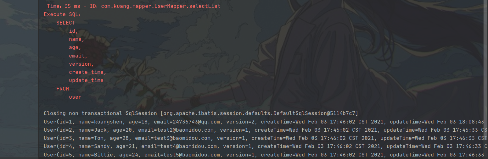
配置日志
看日志来查看是怎么执行的，如上图==红字==
# 配置日志
mybatis-plus.configuration.log-impl=org.apache.ibatis.logging.stdout.StdOutImpl
CRUD扩展
插入操作
Insert插入
// 测试插入
@Test
public void testInsert(){
User user = new User();
user.setName("lggg");
user.setAge(3);
user.setEmail("123456@qq.com");
int result = userMapper.insert(user); // 帮我们自动生成id
System.out.println(result); // 受影响的行数
System.out.println(user); // 发现，id会自动回填
}
数据库插入的id默认值为：全局的唯一id
==主键生成策略==
默认
ID_WORKER全局唯一id
雪花算法：
snowflake是Twitter开源的分布式ID生成算法，结果是一个long型的ID。其核心思想是：使用41bit作为毫秒数，10bit作为机器的ID(5个bit是数据中心，5个bit的机器ID)，12bit作为毫秒内的流水号(意味着每个节点在每毫秒可以生产4096个ID)，最后还有一个符号位，永远是0.可以保证几乎全球唯一！
主键自增
需要配置主键自增：
- 实体类字段上
@TableId(type = IdType.AUTO) - 数据库字段一定要是自增的
其余的源码解释
public enum IdType {
AUTO(0), //数据库id自增
NONE(1), //未设置主键
INPUT(2), //手动输入
ID_WORKER(3), //默认的全局唯一id
UUID(4), //全局唯一id uuid
ID_WORKER_STR(5); //ID_WORKER 字符表示法
}
更新操作
// 测试更新
@Test
public void testUpdate(){
User user = new User();
// 通过条件自动拼接动态sql
user.setId(1356894370770472961L);
user.setName("关注公众号：狂神说");
user.setAge(20);
// 注意：updateById 但是参数是一个 对象！
int i = userMapper.updateById(user);
System.out.println(i);
}
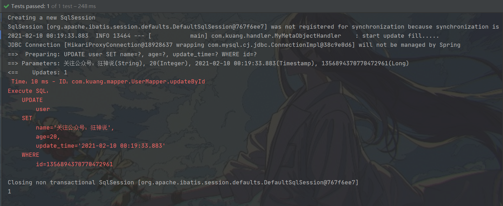
自动填充
创建时间、修改时间！这些操作一边都是自动化完成的
方式一：数据库级别
再表中新增字段create_time,update_time
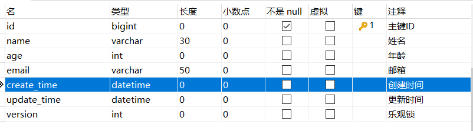
再次测试插入方法，需要先把实体类同步
private Date createTime; private Date updateTime;
方式二：代码级别
删除数据库的默认值、更新操作
实体类字段属性上需要增加注解
// 字段添加填充内容 @TableField(fill = FieldFill.INSERT) private Date createTime; @TableField(fill = FieldFill.INSERT_UPDATE) private Date updateTime;编写处理器来处理这个注解即可
import com.baomidou.mybatisplus.core.handlers.MetaObjectHandler; import lombok.extern.slf4j.Slf4j; import org.apache.ibatis.reflection.MetaObject; import org.springframework.stereotype.Component; import java.util.Date; @Slf4j @Component // 一定不要忘记把处理器加到IOC容器中！ public class MyMetaObjectHandler implements MetaObjectHandler { // 插入时的填充策略 @Override public void insertFill(MetaObject metaObject) { log.info("start insert fill....."); // setFieldValByName(String fieldName, Object fieldVal, MetaObject metaObject this.setFieldValByName("createTime",new Date(),metaObject); this.setFieldValByName("updateTime",new Date(),metaObject); } // 更新时的填充策略 @Override public void updateFill(MetaObject metaObject) { log.info("start update fill....."); this.setFieldValByName("updateTime",new Date(),metaObject); } }测试插入
测试更新、观察时间即可！
乐观锁
乐观锁：十分乐观，它总是认为不会出现问题，无论干什么都不去上锁！如果出现了问题，再次更新值测试
悲观锁：十分悲观，他总是认为会出现问题，无论干什么都会上锁！再去操作！
乐观锁实现方式：
- 取出记录时，获取当前version
- 更新时，带上这个version
- 执行更新时，set version = new version where version = oldversion
- 如果version不对，就更新失败
测试一下MP的乐观锁插件
给数据库中增加version字段
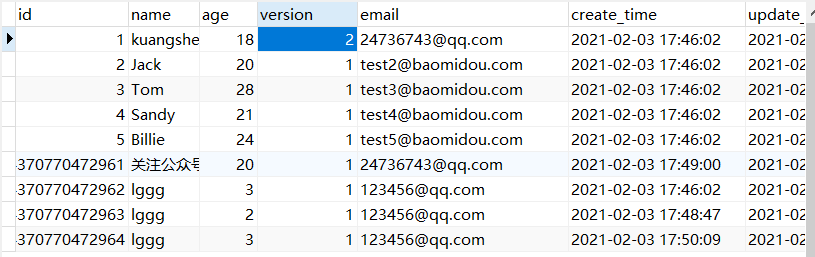
实体类加对应的字段
@Version //乐观锁Version注解 private Integer version;注册组件
// 扫描我们的 mapper 文件夹 @MapperScan("com.kuang.mapper") @EnableTransactionManagement @Configuration // 配置类 public class MyBatisPlusConfig { // 注册乐观锁插件 @Bean public OptimisticLockerInterceptor optimisticLockerInterceptor() { return new OptimisticLockerInterceptor(); } }测试
// 测试乐观锁成功！ @Test public void testOptimisticLocker(){ // 1、查询用户信息 User user = userMapper.selectById(1L); // 2、修改用户信息 user.setName("kuangshen"); user.setEmail("24736743@qq.com"); // 3、执行更新操作 userMapper.updateById(user); } // 测试乐观锁失败！多线程下 @Test public void testOptimisticLocker2(){ // 线程 1 User user = userMapper.selectById(1L); user.setName("kuangshen111"); user.setEmail("24736743@qq.com"); // 模拟另外一个线程执行了插队操作 User user2 = userMapper.selectById(1L); user2.setName("kuangshen222"); user2.setEmail("24736743@qq.com"); userMapper.updateById(user2); // 自旋锁来多次尝试提交！ userMapper.updateById(user); // 如果没有乐观锁就会覆盖插队线程的值！ }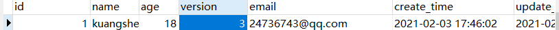
查询操作
// 测试查询
@Test
public void testSelectById(){
User user = userMapper.selectById(1L);
System.out.println(user);
}
// 测试批量查询！
@Test
public void testSelectByBatchId(){
List<User> users = userMapper.selectBatchIds(Arrays.asList(1, 2, 3));
users.forEach(System.out::println);
}
// 按条件查询之一使用map操作
@Test
public void testSelectByBatchIds(){
HashMap<String, Object> map = new HashMap<>();
// 自定义要查询
map.put("name","狂神说Java");
map.put("age",3);
List<User> users = userMapper.selectByMap(map);
users.forEach(System.out::println);
}
分页查询
分页在网站上使用的多
- 原始的limit进行分页
- pageHelper第三方插件
- MP也内置了分页插件
如何使用
配置拦截器组件
// 分页插件 @Bean public PaginationInterceptor paginationInterceptor() { return new PaginationInterceptor(); }直接使用page对象
// 测试分页查询 @Test public void testPage(){ // 参数一：当前页 // 参数二：页面大小 // 使用了分页插件之后，所有的分页操作也变得简单的！ Page<User> page = new Page<>(2,5); userMapper.selectPage(page,null); page.getRecords().forEach(System.out::println); System.out.println(page.getTotal()); }
删除操作
根据id删除记录
// 测试删除
@Test
public void testDeleteById(){
userMapper.deleteById(1L);
}
// 通过id批量删除
@Test
public void testDeleteBatchId(){
userMapper.deleteBatchIds(Arrays.asList(1240620674645544961L,1240620674645544962L));
}
// 通过map删除
@Test
public void testDeleteMap(){
HashMap<String, Object> map = new HashMap<>();
map.put("name","狂神说Java");
userMapper.deleteByMap(map);
}
逻辑删除
物理删除：从数据库直接移除
逻辑删除：在数据库中没有被移除，而是通过一个变量来使它失效！deleted=0->deleted=1
管理员可以查看被删除的记录！防止数据的丢失，回收站
测试：
在数据库中增加一个deleted字段
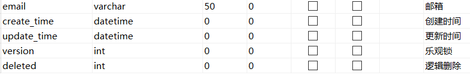
实体类中增加属性
@TableLogic //逻辑删除 private Integer deleted;配置
// 逻辑删除组件！ @Bean public ISqlInjector sqlInjector() { return new LogicSqlInjector(); }# 配置逻辑删除 mybatis-plus.global-config.db-config.logic-delete-value=1 mybatis-plus.global-config.db-config.logic-not-delete-value=0测试一下删除
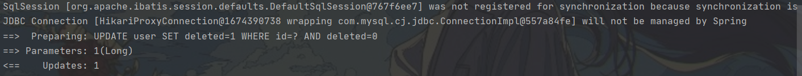
如上语句，==执行的时更新操作而不是删除操作==
记录依旧在数据库，值变化了！
执行按id查询操作：
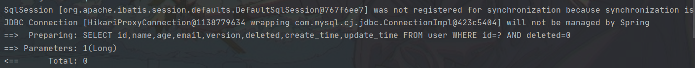
==查询的时候会自动过滤被逻辑删除的字段！==
性能分析插件
在平时的开发中，会遇到一些慢sql。druid…
作用：性能分析拦截器，用于输出每条SQL语句及其执行时间
MP也提供性能分析插件，如果超过这个时间就停止执行！
导入插件
/** * SQL执行效率插件 */ @Bean @Profile({"dev","test"})// 设置 dev test 环境开启，保证我们的效率 public PerformanceInterceptor performanceInterceptor() { PerformanceInterceptor performanceInterceptor = new PerformanceInterceptor(); performanceInterceptor.setMaxTime(100); //ms 设置sql执行的最大时间，如果超过了则不执行 performanceInterceptor.setFormat(true); return performanceInterceptor; }==在SpringBoot中配置环境为dev或者test环境！==
测试使用
@Test void contextLoads() { // 参数是一个 Wrapper ，条件构造器，这里我们先不用 null // 查询全部用户 List<User> users = userMapper.selectList(null); users.forEach(System.out::println); }==只要超过了时间就会抛出异常==，使用性能分析插件，提高效率
条件构造器
十分重要：Wrapper
写一些复杂的sql可以使用它来替代！
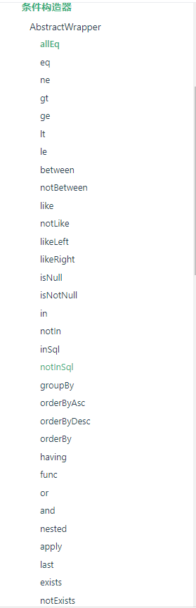
测试一
@Test void contextLoads() { // 查询name不为空的用户，并且邮箱不为空的用户，年龄大于等于12 QueryWrapper<User> wrapper = new QueryWrapper<>(); wrapper .isNotNull("name") .isNotNull("email") .ge("age",12); userMapper.selectList(wrapper).forEach(System.out::println); // 和我们刚才学习的map对比一下 }测试二
@Test void test2(){ // 查询名字狂神说 QueryWrapper<User> wrapper = new QueryWrapper<>(); wrapper.eq("name","lggg"); User user = userMapper.selectOne(wrapper); // 查询一个数据，出现多个结果使用List 或者 Map System.out.println(user); }测试三
@Test void test3(){ // 查询年龄在 20 ~ 30 岁之间的用户 QueryWrapper<User> wrapper = new QueryWrapper<>(); wrapper.between("age",20,30); // 区间 Integer count = userMapper.selectCount(wrapper);// 查询结果数 System.out.println(count); }测试四
// 模糊查询 @Test void test4(){ // 查询年龄在 20 ~ 30 岁之间的用户 QueryWrapper<User> wrapper = new QueryWrapper<>(); // 左和右 t% wrapper .notLike("name","e") .likeRight("email","t"); List<Map<String, Object>> maps = userMapper.selectMaps(wrapper); maps.forEach(System.out::println); }测试五
// 模糊查询 @Test void test5(){ QueryWrapper<User> wrapper = new QueryWrapper<>(); // id 在子查询中查出来 wrapper.inSql("id","select id from user where id<3"); List<Object> objects = userMapper.selectObjs(wrapper); objects.forEach(System.out::println); }测试六
//测试六 @Test void test6(){ QueryWrapper<User> wrapper = new QueryWrapper<>(); // 通过id进行排序 wrapper.orderByAsc("id"); List<User> users = userMapper.selectList(wrapper); users.forEach(System.out::println); }…..
代码自动生成器
dao、pojo、service、controller都自己编写完成！
AutoGenerator时Mybatis-Plus的代码生成器，通过AutoGenerator可以快速生成==Entity、Mapper、Mapper XML、Service、Controlle==r等各个模块的代码，极大的提升了==开发效率==
测试：
package com.lggg;
import com.baomidou.mybatisplus.annotation.DbType;
import com.baomidou.mybatisplus.annotation.FieldFill;
import com.baomidou.mybatisplus.annotation.IdType;
import com.baomidou.mybatisplus.generator.AutoGenerator;
import com.baomidou.mybatisplus.generator.config.DataSourceConfig;
import com.baomidou.mybatisplus.generator.config.GlobalConfig;
import com.baomidou.mybatisplus.generator.config.PackageConfig;
import com.baomidou.mybatisplus.generator.config.StrategyConfig;
import com.baomidou.mybatisplus.generator.config.po.TableFill;
import com.baomidou.mybatisplus.generator.config.rules.DateType;
import com.baomidou.mybatisplus.generator.config.rules.NamingStrategy;
import java.util.ArrayList;
import java.util.Properties;
//代码自动生成器
public class ZoroCode {
public static void main(String[] args) {
//需要构建一个代码自动生成器对像
AutoGenerator mpg = new AutoGenerator();
//配置策略
//1.全局配置
GlobalConfig gc = new GlobalConfig();
//获取用户目录
String projectPath = System.getProperty("user.dir");
gc.setOutputDir(projectPath+"/src/main/java");
gc.setAuthor("Zoro");
gc.setOpen(false);
gc.setFileOverride(false);//是否覆盖
gc.setServiceName("%sService");//去Service的I前缀
gc.setIdType(IdType.ID_WORKER);
gc.setDateType(DateType.ONLY_DATE);
gc.setSwagger2(true);
mpg.setGlobalConfig(gc);
//2.设置数据源
DataSourceConfig dsc = new DataSourceConfig();
dsc.setUrl("jdbc:mysql://localhost:3306/dataName?useSSL=false&useUnicode=true&characterEncoding=utf-8&serverTimezone=GMT%2B8\n");
dsc.setDriverName("com.mysql.cj.jdbc.Driver");
dsc.setUsername("root");
dsc.setPassword("12456");
dsc.setDbType(DbType.MYSQL);
mpg.setDataSource(dsc);
//3.包的配置
PackageConfig pc = new PackageConfig();
pc.setModuleName("Object");
pc.setParent("com.lggg");
pc.setEntity("entity");
pc.setMapper("mapper");
pc.setService("service");
pc.setController("controller");
mpg.setPackageInfo(pc);
//4.策略配置
StrategyConfig strategy = new StrategyConfig();
strategy.setInclude("Object_table1","Object_table2","Object_table3");//设置要映射的表名
strategy.setNaming(NamingStrategy.underline_to_camel);
strategy.setColumnNaming(NamingStrategy.underline_to_camel);
strategy.setEntityLombokModel(true);//自动lombok
strategy.setLogicDeleteFieldName("deleted");
//自动填充配置
TableFill gmtCreate = new TableFill("gmt_create", FieldFill.INSERT);
TableFill gmtModified = new TableFill("gmt_modified", FieldFill.INSERT_UPDATE);
ArrayList<TableFill> tableFills = new ArrayList<>();
tableFills.add(gmtCreate);
tableFills.add(gmtModified);
strategy.setTableFillList(tableFills);
//乐观锁
strategy.setVersionFieldName("version");
strategy.setRestControllerStyle(true);
strategy.setControllerMappingHyphenStyle(true);//localhost:8080/hello_id_2
mpg.setStrategy(strategy);
mpg.execute();//执行
}
}
转载请注明来源，欢迎对文章中的引用来源进行考证，欢迎指出任何有错误或不够清晰的表达。可以在下面评论区评论，也可以邮件至 1589631311@qq.com